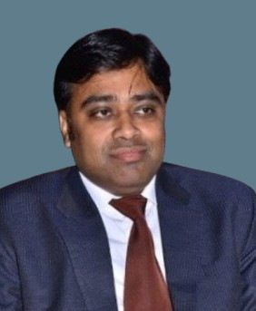

Guided by visionary leaders, ensuring strategic vision and ethical execution in defense technology.

Dr. Rajasve Kaushik is the CEO of Sangam Rise Foundation, a visionary leader dedicated to fostering innovation and entrepreneurship. A Startup Mentor, Quality and Compliance Expert, and Defence Technology Consultant, he has guided numerous startups toward sustainable growth and real-world impact.